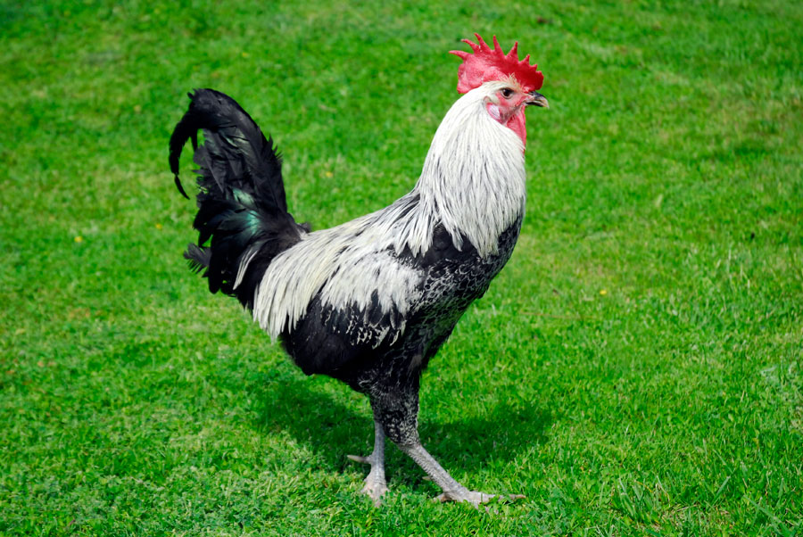
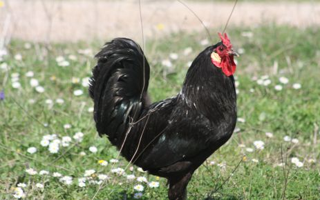
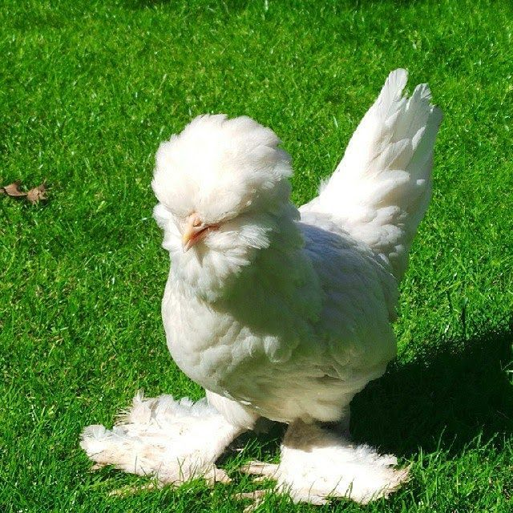

Zootekni Bölümü Uygulama Ödevi
Denizli horozu, Denizli ilimize özgü, uzun ötüşü ve heybetli duruşuyla bilinen en önemli yerli gen kaynağımızdır. Milli bir ırk olarak tescil edilmiş ve koruma altına alınmıştır.

Fiziksel Özellikler: En belirgin özelliği gözlerindeki siyah halkadır, bu yüzden "sürmeli" denir. İbikleri balta şeklindedir ve bacakları koyu renkli, kuvvetlidir.
Zooteknik Özellikler: Ötüş süreleri 20 saniyeden başlayıp 35 saniyeye kadar çıkabilir. Vücut yapısı iri olup, canlı ağırlığı horozlarda ortalama 3-3.5 kg civarındadır.
Sinop'un Gerze ilçesinde yetiştirilen, dayanıklılığı ve asil siyah rengiyle tanınan yerli bir ırkımızdır. Hocanın slaytındaki figure ve figcaption yapısı burada kullanılmıştır:

Fiziksel Özellikler: Tamamen simsiyah tüylere ve beyaz kulakçıklara sahiptir. En ilginç yanı ibiğinin "V" şeklinde veya çatallı olmasıdır.
Verim Özellikleri: Hem eti hem de yumurtası için yetiştirilir. Doğal koşullarda yiyecek arama kabiliyeti çok yüksektir. Yıllık yumurta verimi 90-110 adet arasındadır.
Osmanlı padişahlarının saraylarında özel olarak korunan, dünyaca ünlü bir süs tavuğu ırkıdır. 1854 yılında İstanbul'dan İngiltere'ye gönderilerek tüm dünyaya yayılmıştır.

Ayırt Edici Özellikler: Diğer tavuklar genellikle 4 parmaklıyken, Sultan tavuğu 5 parmaklıdır. Başında büyük bir tüy tepesi, çenesinde sakal ve ayaklarında yoğun paçalar bulunur.
Mizaç: Çok uysal ve insancıl bir hayvandır. Bu özelliği nedeniyle sergi ve hobi tavukçuluğunda dünya genelinde en çok tercih edilen süs ırklarından biridir.
| Irk Adı | Varyete/Renk | Öne Çıkan Özellik | Parmak Sayısı | Canlı Ağırlık |
|---|---|---|---|---|
| Denizli | Demirkır / Al | Uzun Ötüş (25 sn+) | 4 Parmak | 3.0 - 3.5 kg |
| Gerze | Siyah | Çatal İbik Yapısı | 4 Parmak | 2.5 - 3.0 kg |
| Sultan | Beyaz | Tepe Tüyü / Sakal | 5 Parmak | 1.5 - 2.0 kg |
|
Hazırlayan: Lütfi Talha Alkış Üniversite: Çukurova Üniversitesi |
Ders: Bilişim Teknolojileri Bölüm: Ziraat Fakültesi - Zootekni |